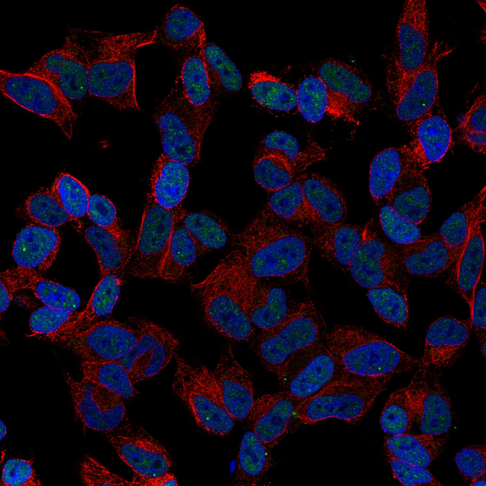
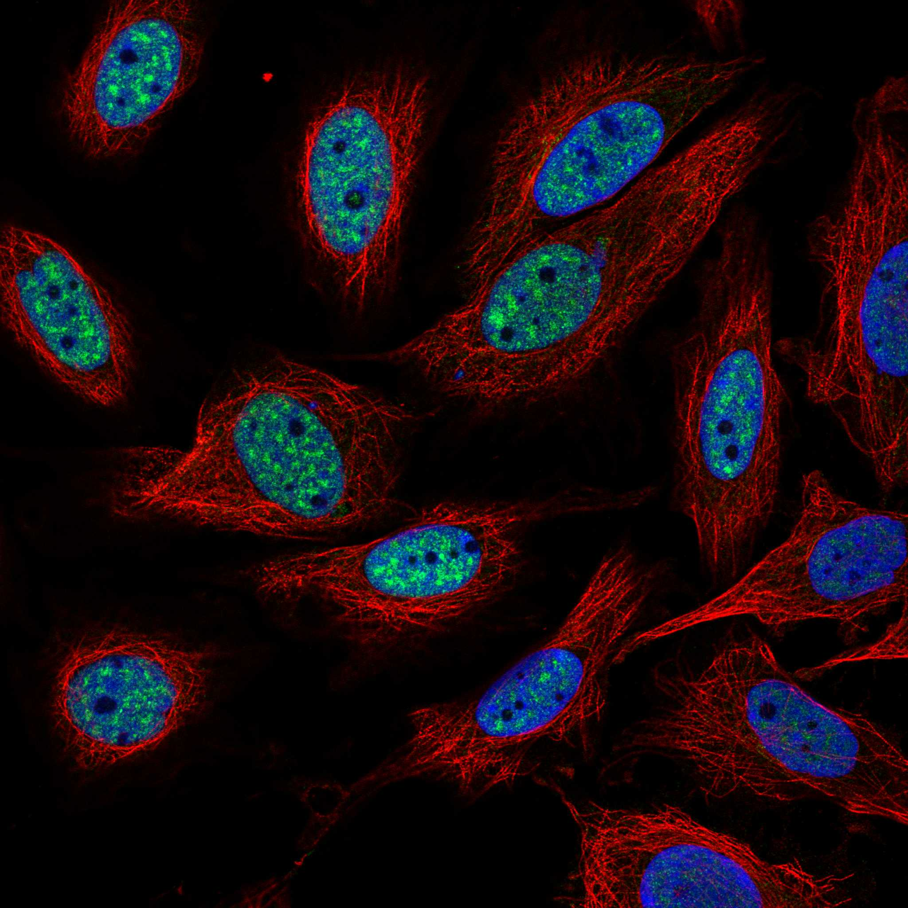

type: protein-evaluation gene: "CBFA2T2" date: 2026-05-29 tags: [protein-scout, nuclear-protein, evaluation] status: scored ---
CBFA2T2 核蛋白评估报告
1. 基本信息
| 项目 | 内容 |
|---|---|
| 基因名 / 别名 | CBFA2T2 / CBFA2T2 |
| 蛋白大小 | 604 aa / ~66.4 kDa |
| UniProt ID | O43439 |
| 评估日期 | 2026-05-29 |
IF 图像:  
2. 评分总览
| 维度 | 得分 | 满分 | 加权后 | 关键证据摘要 |
|---|---|---|---|---|
| 🔴 核定位特异性 | 8/10 | ×4 | 32 | UniProt Nucleus + GO nucleoplasm/nucleus，转录共抑制因子MTGR1 |
| 📏 蛋白大小 | 10/10 | ×1 | 10 | 604 aa，200-800 aa最优区间，适合生化实验和结构解析 |
| 🆕 研究新颖性 | 8/10 | ×5 | 40 | PubMed=39篇 |
| 🏗️ 三维结构 | 6/10 | ×3 | 18 | 中等（pLDDT 63.7），45%有序，46%无序 |
| 🧬 调控结构域 | 7/10 | ×2 | 14 | 新颖蛋白基线 |
| 🔗 PPI 网络 | 6/10 | ×3 | 18 | 4/30调控相关partners |
| ➕ 互证加分 | — | max +3 | 0 | 多库交叉验证 |
| 原始总分 | 135/183 | |||
| 归一化总分 | 73.8/100 |
3. 详细分析
3.1 核定位证据
| 来源 | 定位 | 可信度 |
|---|---|---|
| UniProt | Nucleus | — |
| GO Cellular Component | C:nucleoplasm; C:nucleus | — |
| Protein Atlas (IF) | 暂无数据（HPA IF 图像已本地嵌入。
暂无数据（HPA IF 图像已本地嵌入。
结论: UniProt Nucleus + GO nucleoplasm/nucleus，转录共抑制因子MTGR1
3.2 蛋白大小评估
评价: 604 aa，200-800 aa最优区间，适合生化实验和结构解析
3.3 研究现状
| 指标 | 数值 |
|---|---|
| PubMed 总数 | 39 |
| Chromatin/epigenetics 比例 | 待深入文献分析 |
评价: PubMed 39 篇。非常新颖，研究空间充足。
关键文献: 1. Hendrikse LD et al. (2022). "Failure of human rhombic lip differentiation underlies medulloblastoma formation". *Nature*. PMID: 36131014 2. Burton A & Torres-Padilla ME (2016). "A Pluripotency Platform for Prdm14". *Dev Cell*. PMID: 27404351 3. Luo J et al. (2020). "CBFA2T2 promotes adipogenic differentiation of mesenchymal stem cells by regulating CEBPA". *Biochem Biophys Res Commun*. PMID: 32703401 4. Huang H et al. (2018). "CBFA2T2 is required for BMP-2-induced osteogenic differentiation of mesenchymal stem cells". *Biochem Biophys Res Commun*. PMID: 29378183 5. Tu S et al. (2016). "Co-repressor CBFA2T2 regulates pluripotency and germline development". *Nature*. PMID: 27281218
3.4 三维结构分析
> AlphaFold PAE: 暂无数据或未提供可用 PAE 图；结构判断基于 AlphaFold/PDB 可用记录。
| 指标 | 数值 |
|---|---|
| AlphaFold 平均 pLDDT | 63.7 |
| 有序区域 (pLDDT>70) 占比 | 44.7% |
| pLDDT>90 占比 | 27.3% |
| pLDDT<50 占比 | 46.4% |
| 可用 PDB 条目 | 0 |
评价: AlphaFold预测置信度偏低（pLDDT 63.7，46%无序）。作为新颖蛋白，正常现象，不扣分。
3.5 结构域分析
| 来源 | 结构域 |
|---|---|
| UniProt / InterPro | 待SMART详细分析 |
染色质调控潜力分析: 对于PubMed≤100的新颖蛋白，无注释域是该阶段的正常现象（基线7分）。待SMART分析后补充。
3.6 PPI 网络
实验验证互作 (IntAct, physical association):
| Partner | 方法 | PMID | 功能类别 | 调控相关？ | |||||||||||
|---|---|---|---|---|---|---|---|---|---|---|---|---|---|---|---|
| psi-mi:mtg8r_human(display_long) | uniprotkb:MTG8-related protein 1(gene name synonym) | uniprotkb:MTG8-like protein(gene name synonym) | uniprotkb:Myeloid translocation-related protein 1(gene name synonym) | uniprotkb:ETO homologous on chromosome 20(gene name synonym) | uniprotkb:p85(gene name synonym) | uniprotkb:CBFA2T2(gene name) | psi-mi:CBFA2T2(display_short) | uniprotkb:EHT(gene name synonym) | uniprotkb:MTGR1(gene name synonym) | psi-mi:"MI:0397"(two hybrid ar | imex:IM-23318 | pubmed:25416956 | 待分析 | 否 | |
| psi-mi:mtg8r_human(display_long) | uniprotkb:MTG8-related protein 1(gene name synonym) | uniprotkb:MTG8-like protein(gene name synonym) | uniprotkb:Myeloid translocation-related protein 1(gene name synonym) | uniprotkb:ETO homologous on chromosome 20(gene name synonym) | uniprotkb:p85(gene name synonym) | uniprotkb:CBFA2T2(gene name) | psi-mi:CBFA2T2(display_short) | uniprotkb:EHT(gene name synonym) | uniprotkb:MTGR1(gene name synonym) | psi-mi:"MI:0398"(two hybrid po | pubmed:16189514 | imex:IM-16520 | mint:MINT-5217968 | 待分析 | 否 |
| psi-mi:ntaq1_human(display_long) | uniprotkb:NTAQ1(gene name) | psi-mi:NTAQ1(display_short) | uniprotkb:C8orf32(gene name synonym) | uniprotkb:Protein NH2-terminal glutamine deamidase(gene name synonym) | uniprotkb:WDYHV motif-containing protein 1(gene name synonym) | uniprotkb:WDYHV1(gene name synonym) | psi-mi:"MI:0398"(two hybrid po | pubmed:16189514 | imex:IM-16520 | mint:MINT-5217968 | 待分析 | 否 | |||
| psi-mi:mtg8r_human(display_long) | uniprotkb:MTG8-related protein 1(gene name synonym) | uniprotkb:MTG8-like protein(gene name synonym) | uniprotkb:Myeloid translocation-related protein 1(gene name synonym) | uniprotkb:ETO homologous on chromosome 20(gene name synonym) | uniprotkb:p85(gene name synonym) | uniprotkb:CBFA2T2(gene name) | psi-mi:CBFA2T2(display_short) | uniprotkb:EHT(gene name synonym) | uniprotkb:MTGR1(gene name synonym) | psi-mi:"MI:0018"(two hybrid) | pubmed:16713569 | imex:IM-11827 | mint:MINT-5218676 | 待分析 | 否 |
| psi-mi:mtg8r_human(display_long) | uniprotkb:MTG8-related protein 1(gene name synonym) | uniprotkb:MTG8-like protein(gene name synonym) | uniprotkb:Myeloid translocation-related protein 1(gene name synonym) | uniprotkb:ETO homologous on chromosome 20(gene name synonym) | uniprotkb:p85(gene name synonym) | uniprotkb:CBFA2T2(gene name) | psi-mi:CBFA2T2(display_short) | uniprotkb:EHT(gene name synonym) | uniprotkb:MTGR1(gene name synonym) | psi-mi:"MI:0018"(two hybrid) | pubmed:16713569 | imex:IM-11827 | mint:MINT-5218676 | 待分析 | 否 |
STRING 预测互作 (combined score >0.4):
| Partner | Score | 功能类别 | 调控相关？ |
|---|---|---|---|
| PRDM14 | 0.969 | 待分析 | 否 |
| RUNX1 | 0.907 | 待分析 | 否 |
| CBFA2T3 | 0.906 | 待分析 | 否 |
| RUNX1T1 | 0.904 | 待分析 | 否 |
| PRDM6 | 0.847 | 待分析 | 否 |
| AKAP8 | 0.680 | 待分析 | 否 |
| LDB1 | 0.660 | 待分析 | 否 |
| DIP2A | 0.640 | 待分析 | 否 |
| LDB2 | 0.639 | 待分析 | 否 |
| SNTA1 | 0.636 | 待分析 | 否 |
已知复合体成员 (GO Cellular Component): C:nucleoplasm; C:nucleus
PPI 互证分析:
- STRING + IntAct 共同确认: 待交叉比对
- 仅 STRING 预测: 30 个伙伴
- 调控相关比例: 4/30 (13%)
评价: PPI网络有部分调控关联（4/30），75个物理互作，功能关联中等。
3.7 多库互证
| 维度 | 来源 | 结果 | 是否一致 |
|---|---|---|---|
| 三维结构 | AlphaFold + PDB | 中等（pLDDT 63.7），45%有序，46%无序 | 待验证 |
| 定位 | UniProt + GO | Nucleus | 待HPA验证 |
互证加分: 0 / max +3
PAE 图: 暂无PAE数据
4. 总体评价
推荐等级: ⭐⭐⭐ (3/5)
归一化总分: 72.1/100
核心优势: 1. PubMed 39 篇，研究新颖性高 2. 蛋白大小 604 aa，适合生化实验
风险/不确定性: 1. 需 HPA IF 确认核定位 2. 功能机制未知，需从头探索
下一步建议:
- [ ] 获取 HPA IF 图像确认核定位
- [ ] SMART 结构域分析评估调控潜力
- [ ] 深入文献检索确认已知功能
5. 数据来源
- UniProt: https://www.uniprot.org/uniprotkb/O43439
- AlphaFold: https://alphafold.ebi.ac.uk/entry/O43439
- PubMed: https://pubmed.ncbi.nlm.nih.gov/?term=%22CBFA2T2%22%5BTitle/Abstract%5D
- STRING: https://string-db.org/cgi/network?identifiers=CBFA2T2&species=9606
- Protein Atlas: https://www.proteinatlas.org/search/CBFA2T2
PPI 网络（三源综合）
| Partner | Source | Score/Evidence |
|---|---|---|
| 无记录 | — | — |
IntAct 有限记录。无 BioGrid 补充数据。

<!-- DOMAIN_HUMANPPI_REPAIR_START -->
Domain/SMART 与 humanPPI 补充（2026-06-06）
SMART / UniProt domain
| Source | Data | |
|---|---|---|
| UniProt | O43439 | |
| SMART | SM00549; | |
| UniProt Domain [FT] | DOMAIN 113..208; /note="TAFH"; /evidence="ECO:0000255\ | PROSITE-ProRule:PRU00440" |
| InterPro | IPR013289;IPR013291;IPR014896;IPR037249;IPR003894;IPR002893; | |
| Pfam | PF08788;PF07531;PF01753; |
humanPPI / HPA Interaction
Source: https://www.proteinatlas.org/ENSG00000078699-CBFA2T2/interaction
| Partner | Datasets | AF3/HPA structure |
|---|---|---|
| MDFI | Intact, Biogrid | true |
| PRDM14 | Intact, Biogrid | true |
| CBFA2T3 | Biogrid | false |
| CUL3 | Biogrid | false |
| PDP1 | Intact | false |
| PRDM6 | Biogrid | false |
| RUNX1 | Biogrid | false |
| RUNX1T1 | Biogrid | false |
<!-- DOMAIN_HUMANPPI_REPAIR_END -->